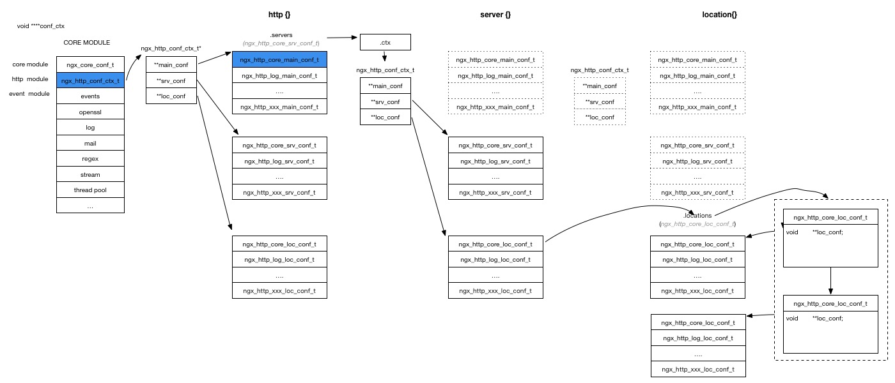

1.介绍
在介绍实现之前，我们先看一下，nginx的配置文件是如何管理的。1
2
3
4
5
6
7
8
9
10
11
12
13
14
15
16
17
18
19
20
21
22
23
24
25
26
27
28
29
30
31
32
33
34
35
36
37
38user nobody;
daemon on;
worker_processes 1;
error_log logs/debug.log debug;
pid run/nginx.pid;
#thread_pool default threads=64 max_queue=65536;
events {
use epoll;
worker_connections 1024;
multi_accept on; #if on, accept as many connections as possible in one time
accept_mutex off;
}
http {
access_log logs/access.log main;
sendfile on;
keepalive_timeout 65;
keepalive_requests 1000;
server {
servername www.test1.com
listen 80;
access_log logs/host.access.log main;
location / {
root html/test1;
}
server {
servername www.test2.com
listen 443;
access_log logs/host.access.log main;
location / {
root html/test2;
}
}
大致如上的样子，每一行都可以认为是一个command，有其参数。重要的是，每个指令有起生效范围。返回包含三类：
- NGX_HTTP_MAIN_CONF
- NGX_HTTP_SRV_CONF
- NGX_HTTP_LOC_CONF
当我们写nginx插件的时候，会定义指令可以配置在哪个返回，举access_log为例：1
2
3
4
5
6
7{ ngx_string("access_log"),
NGX_HTTP_MAIN_CONF|NGX_HTTP_SRV_CONF|NGX_HTTP_LOC_CONF|NGX_HTTP_LIF_CONF
|NGX_HTTP_LMT_CONF|NGX_CONF_1MORE,
ngx_http_log_set_log,
NGX_HTTP_LOC_CONF_OFFSET,
0,
NULL }
可以看出，这个指令即可以配置在main段可以server段也可以location段。而pid指令就只能配置在main段里1
2
3
4
5
6{ ngx_string("pid"),
NGX_MAIN_CONF|NGX_DIRECT_CONF|NGX_CONF_TAKE1,
ngx_conf_set_str_slot,
0,
offsetof(ngx_core_conf_t, pid),
NULL },
在介绍实现之前，我们先理一个基本的规则，方便理解：
- main的实例只有一个，即全局的
- server实例有很多个，存在于main内
- location的实例有很多个，存在一个server内
- 每个模块在可以有若干配置指令，指令的生效范围可以是前面的3个实例
好，后面就是我们的重点了，模块的配置到底是如何保存在各个实例中的（main实例，server实例，以及location实例）
2.配置的管理
2.1. 模块的分类
nginx的模块，大致分两类吧，也许有别的，但我不关心
- CORE模块
- HTTP模块
core模块是最基础的模块，比如events模块,log模块，thread pool模块，http_core模块等，
HTTP模块是处理http时候使用的模块，我们增加的扩展大多属于这类模块。
CORE模块是第一层级，HTTP模块是http_core模块的下一层。这和配置管理很有关系。
2.2. core模块的配置
大家都知道nginx的配置，都保存在cycle->conf_ctx里，是一个void**类型，但为啥这么多层，我现在仍不知情。
不过不影响我们看逻辑：他的第一层下标就是core模块的index，比如http_core模块的index是20，那么http_core模块对应的配置文件便是cycle->conf_ctx[20]，这样就脱调了一层（我没看到哪里脱第二层和第三层）。
core 模块有这么几个
- ngx_core_module
- ngx_events_module
- ngx_openssl_module
- ngx_google_perftools_module
- ngx_http_module
- ngx_errlog_module
- ngx_mail_module
- ngx_regex_module
- ngx_stream_module
- ngx_thread_pool_module
| 变量名 | 模块名 | 配置文件类型 |
|---|---|---|
| ngx_core_module | core | ngx_core_conf_t |
| ngx_http_module | http | 无 |
| ngx_stream_module | stream | 无 |
| ngx_google_perftools_module | google_perftools | ngx_google_perftools_conf_t |
| ngx_events_module | events | 无 |
| ngx_errlog_module | errlog | 无 |
| ngx_mail_module | 无 | |
| ngx_regex_module | regex | ngx_regex_conf_t |
| ngx_openssl_module | openssl | ngx_openssl_conf_t |
| ngx_thread_pool_module | thread_pool | ngx_thread_pool_conf_t |
core module的定义如下1
2
3
4
5typedef struct {
ngx_str_t name;
void *(*create_conf)(ngx_cycle_t *cycle);
char *(*init_conf)(ngx_cycle_t *cycle, void *conf);
} ngx_core_module_t;
可以看出，有的是create_conf是有值的，比如mail/regex/thread_pool/core，其他的是没有的，为什么会有这样的分别呢?
我们可以看看core这个module得conf1
2
3
4
5
6
7
8
9
10
11
12
13
14
15
16
17
18
19
20
21
22
23
24
25
26
27
28
29
30
31typedef struct {
ngx_flag_t daemon;
ngx_flag_t master;
ngx_msec_t timer_resolution;
ngx_int_t worker_processes;
ngx_int_t debug_points;
ngx_int_t rlimit_nofile;
off_t rlimit_core;
int priority;
ngx_uint_t cpu_affinity_auto;
ngx_uint_t cpu_affinity_n;
ngx_cpuset_t *cpu_affinity;
char *username;
ngx_uid_t user;
ngx_gid_t group;
ngx_str_t working_directory;
ngx_str_t lock_file;
ngx_str_t pid;
ngx_str_t oldpid;
ngx_array_t env;
char **environment;
} ngx_core_conf_t;
可以看出，里边都是一些全局的配置，比如是否daemon，pid等等。都很直接。
那么为什么其他的模块，比如event/http/stream 都没有对应的conf呢？
因为http/stream 可以有多个，每个http和stream，还有其更细分的模块，不再是NGX_CORE_MODULE这个类型了。
比如：
- http有一个对应ngx_http_core_module，其类型为NGX_HTTP_MODULE
- stream有一个对应的ngx_stream_core_module，其类型为NGX_STREAM_MODULE
- event有一个对应的ngx_event_core_module，其对应的类型为NGX_EVENT_MODULE
这里errlog是一个另类，欠一个债，后续补充
对于一个新增的模块，一般需要写很一些配置命令，这些配置命令有的是通过set_slot的方式写入到main/svc/loc的配置conf中，有的是调用函数。
调用函数的格式一般这样
1 | static char * |
cf和conf 是什么呢？这个对于理解配置文件解析是很重要的
先说ngx_conf_t，这个是本命令所在实例（main/srv/loc）的总体配置情况。1
2
3
4
5
6
7
8
9
10
11
12
13
14
15
16
17struct ngx_conf_s {
char *name; //命令的名字
ngx_array_t *args; //命令的参数
ngx_cycle_t *cycle;
ngx_pool_t *pool;
ngx_pool_t *temp_pool;
ngx_conf_file_t *conf_file;
ngx_log_t *log;
void *ctx; // 最重要的部分
ngx_uint_t module_type;
ngx_uint_t cmd_type;
ngx_conf_handler_pt handler;
void *handler_conf;
};
ctx是最重要的部分，他是本command所在的实例的上下文信息，对于不通的模块，结构不太一样
对于http来讲，其为ngx_http_conf_ctx_t。在一个http{},sever{},location{}开始的时候，都会创建一个这样的变量，{}内的命令解析的时候的cf就是这个变量
对于event来讲，其为一个数组指针
对于stream来讲，是ngx_stream_conf_ctx_t
那参数conf又是啥呢？在某个实例内，解析到某个命令的时候，conf是该命令所在模块在这个实例的配置。
比如listen命令定义如下1
2
3
4
5
6{ ngx_string("listen"),
NGX_HTTP_SRV_CONF|NGX_CONF_1MORE,
ngx_http_core_listen,
NGX_HTTP_SRV_CONF_OFFSET,
0,
NULL },
它定义在server内，模块为ngx_http_core_module，在初始化这个模块的时候，会调用ngx_http_core_create_srv_conf 创建ngx_http_core_srv_conf_t
所以对于listen命令来讲，其conf就是ngx_http_core_srv_conf_t
总结一下，这样方式的好处就是在处理一个命令的时候，能方便的得到本模块在本实例的配置信息，也能得到本实例的其他模块的配置信息。
对于ngx_http_module，只有一个命令，即 http, 所以每次遇到一个http {}这样的配置段，就会执行ngx_http_block函数
那么ngx_http_block到底执行力啥东西呢？
对于每个http{}段，都会对应一个ngx_http_conf_ctx_t类型的ctx变量。1
2static char *
ngx_http_block(ngx_conf_t *cf, ngx_command_t *cmd, void *conf)
创建的ctx变量会当成返回值赋值给参数conf，具体怎么用还不清楚。（这里推测conf和ngx_cycle里的**有关系）
对于每个http{}block来说，都会创建一个ngx_http_conf_ctx_t类型的变量，用于存储各个http模块的ctx1
2
3
4
5typedef struct {
void **main_conf;
void **srv_conf;
void **loc_conf;
} ngx_http_conf_ctx_t;
抽象的不要不要的，这也是我们要着重说的部分啦
2.3 http_core的main
前面我们提到过，每个http模块的指令可以定义在不同的范围生效，这里先介绍最简单的情况：在main里生效的情况。这也是最简单的情况了。这个和前面提到的NGX_CORE_MODULE类型的模块类似，是以数组的方式组织的，下标即http模块的下标。
对于解析到一个http{}时候，会创建一个ctx，这个ctx就是下面的结构
1 | typedef struct { |
- main_conf,保留所有模块的main conf
- srv_conf和loc_conf，看到这里的时候，敏感的人就会想，这里明明是main即全局的ctx，srv_conf和loc_conf会不会是没用的？答案是有用的，干啥用的，后面一起讲
每个模块的main conf就保存在**main_conf里，比如access_log模块index是32，那么他的main conf就是：
1 | ((ngx_http_conf_ctx_t*)(cycle->conf_ctx[http_core_module_index]))->main_conf[32]; |
2.4 http_core的server
模块的指令定义在server段的话，是保存在哪里呢？server实例不是全局唯一的，而是可以定义多个的，所以先需要知道server实例保存在哪里，进而知道如何在server实例里保存这个模块的配置。
在2.3里提到过，每个HTTP模块通常有一个main_conf，注意有一个特殊的HTTP模块，那就是 ngx_http_core_module, 它有一个main conf，即ngx_http_core_main_conf_t。我们定义在一个
http{}的所有server实例ngx_http_core_srv_conf_t就保存在ngx_http_core_main_conf_t的servers成员里。
留意一下ngx_http_core_srv_conf_t本身里也有一个ngx_http_conf_ctx_t，那么这个家伙在这里又怎么理解呢？
- main_conf直接复用父实例的main_conf，因为这里已经是server段了
- srv_conf保留了本实例里所有http模块的server conf配置，以模块下标索引，类似之前的思路
- loc_conf，和前面一样，这里是server段的ctx，那么loc_conf是不是没啥用，同样是有用的。
2.5 http_core的location
和前面的思路一样，我们需要知道location实例的藏匿点。
server实例们保存在ngx_http_core_main_conf_t里，那么location们按理应该保存在ngx_http_core_srv_conf_t里。
但失望了，它们却保存在ngx_http_core_loc_conf_t里，主要是因为location是可以嵌套的。
1 | ngx_queue_t *locations; |
每个locations成员的类型是ngx_http_location_queue_t,具体怎么加入locations，请查阅代码ngx_http_add_location。
但ngx_http_location_queue_t只是一个封装，具体有逻辑的结构还是ngx_http_core_loc_conf_t。
ngx_http_core_loc_conf_t里有一个loc_conf的成员，答对了，他就是保存所有模块location配置的地方。1
2/* pointer to the modules' loc_conf */
void **loc_conf;
ngx_http_core_srv_conf_t里没有保存各个模块的srv_conf list只是保存了ctx，可以根据ctx间接找到所有模块的srv conf，为什么ngx_http_core_loc_conf_t里保存了loc_conf呢，
且没有ngx_http_conf_ctx_t类型的成员了呢？这个动机我还是不太清楚。
但这里有点需要指出的是，location是可以嵌套的。ngx_http_core_srv_conf_t的ctx的http_core模块，有个loc_conf[ngx_http_core_module.ctx_index]。
可以认为是这个server{}默认的location，其内的locations，记录了本server{}里的所有location。
2.6 关于merge操作
问题的起源是，如果一个选项比如access_log在main里和server各有配置，怎么办？模块的作者需要自己写merge函数
1 | static ngx_http_module_t ngx_http_log_module_ctx = { |
那么nginx是怎么回调用户自己的函数的呢？
而且回掉的时候的参数类型是一样的，比如一个模块的作者定义了一条指令 xxx on/off。这个指令可以在不同范围生效。
对应不同段的定义如下1
2
3
4
5
6
7
8
9
10
11
12
13
typedef struct {
ngx_flag_t enable;
} ngx_http_xxx_loc_conf_t
typedef struct {
ngx_flag_t enable;
} ngx_http_xxx_srv_conf_t;
typedef struct {
ngx_flag_t enable;
} ngx_http_xxx_main_conf_t;
假设模块的作者想要的规则是使用最小范围的。location没配，则用server里的，server里没配，则用main里的。
当merge location的时候，传入的都是ngx_http_xxx_loc_conf_t类型的。我当时的困惑是，location里的配置当然是ngx_http_xxx_loc_conf_t类型的，但server哪里来ngx_http_xxx_loc_conf_t类型的配置。
再联想一下前面说的问题，为啥创建server实例的时候，会把各个模块的location实例创建出来一个，那时候分明还有没有解析到location配置。这个家伙就是用来merge的。那问题来了，他的enable的值从哪里来呢？当然是在server段里配置 xxx on/off的时候。
其实前面的类型定义的代码是错误的，
当一个指令可以在各个范围生效的时候，需要把这个指令存储在最小的范围里，所以上面的定义应该改成：
1 |
|
然后定义commands的时候1
2
3
4
5
6
7
8{
ngx_string("xxx"),
NGX_HTTP_MAIN_CONF|NGX_HTTP_SRV_CONF|NGX_HTTP_LOC_CONFNGX_CONF_FLAG,
ngx_conf_set_flag_slot,
NGX_HTTP_LOC_CONF_OFFSET,
offsetof(ngx_http_xxx_loc_conf_t, enable),
NULL
},
NGX_HTTP_LOC_CONF_OFFSET是告诉nginx，放到ctx的那个conf里，还记得ctx的定义么？1
2
3
4
5typedef struct {
void **main_conf;
void **srv_conf;
void **loc_conf;
} ngx_http_conf_ctx_t;
然后offset那一行，告诉存储在那个变量里
最后关键来了，怎么merge呢？
答：对于一个模块来说，就是用main实例里的srv_conf和server实例里的srv_conf merge，然后用server实例里的loc_conf和location实例里的loc_conf merge。
注意merge的时候是会改变配置的哦。
2.7 对于一个request，如何找对应的模块的配置
最后看一下运行态，对于一个请求来讲需要找到对应的srv和loc配置，才能处理起来
即ngx_http_get_module_ctx是如何生效的。
1 | #define ngx_http_get_module_main_conf(r, module) \ |
所以就是看看我们的r是如何赋值 main_conf/svc_conf/loc_conf的
我原来以为看如何找main_conf是最容易的，但感觉有点复杂。
ngx_http_init_connection函数里，1
2/* the default server configuration for the address:port */
hc->conf_ctx = hc->addr_conf->default_server->ctx;
但default_server->ctx尚不知如何赋值的。不过不管哪个server他们的main_conf都是一样的，知识srv_conf不一样而已。
然后再ngx_http_create_request里，就用了上面找到的ctx去找main_conf。
其他的两个容易看到 ngx_http_find_virtual_server，帮我们找到ngx_http_core_srv_conf_t配置。
ngx_http_core_find_location帮助我们找到对应的location，即为r->loc_conf赋值，有了这个之后，就可以找到这个location下的所有其他模块的配置
好了，分析结束，上一个大图。
